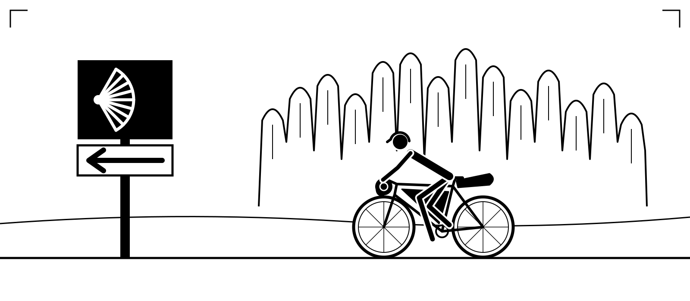
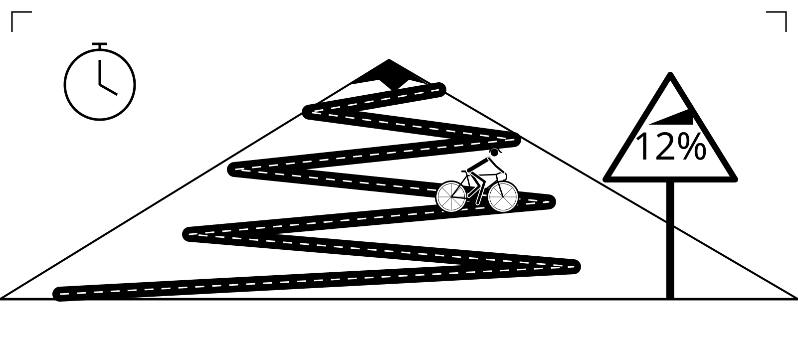
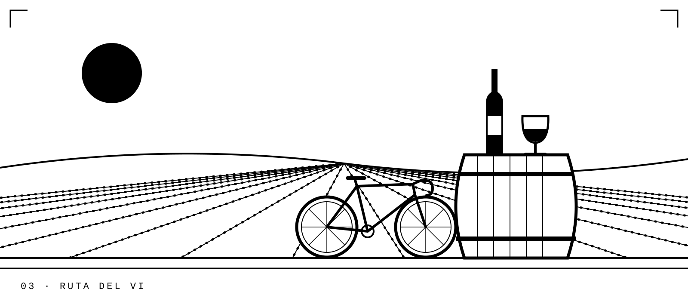
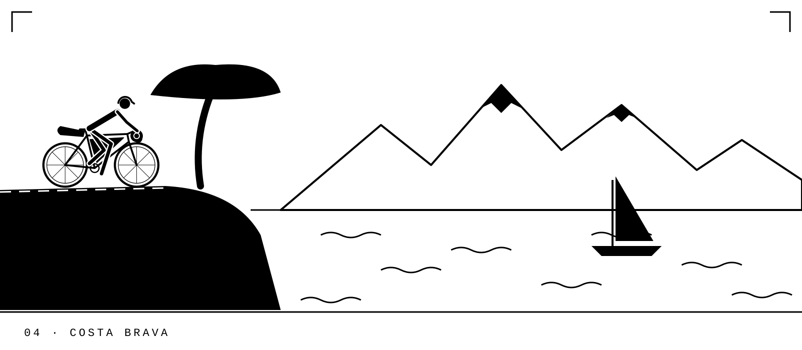

We've spent years riding the roads and tracks of Catalonia, and these are our favourites. Every trip adapts to the group's needs: from fully supported deluxe and luxury tours, with a guide, a support van and beautiful hotels, all the way down to barebones hobo-style bikepacking with everything strapped to your bike and a bivvy under the stars.
Groups are small and the pace is set by the riders. Whether you're chasing watts or chasing views, we'll match the day to you.
Ride the Camí de Sant Jaume from Montserrat west across Catalonia's interior: Romanesque churches, hilltop villages and the long, open plains towards Lleida. We carry your luggage; you collect the stamps.
A week of structured riding on the climbs and empty roads of the Baixa Segarra and the Prades mountains. Daily sessions, coaching, ride analysis and proper recovery food.
An easy day through the vineyards of the Baixa Segarra and down to the monastery of Poblet and medieval Montblanc, with tastings of Trepat and cava at family cellars. Lunch included.
Our home loop: two days on the Catalan back roads where you'll see more tractors than cars. Stone villages, castles, long views and a night in a rural guesthouse.
The big one. From Girona's cycling roads up into the high Pyrenees, then down to the coves of the Costa Brava. Fully supported, with hand-picked hotels every night.
Farm tracks, forest roads and old drovers' paths linking the Segarra plains with the Prades mountains. Hardly any tarmac and hardly any people. Bikepacking or hotel-based.